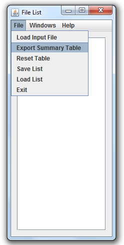
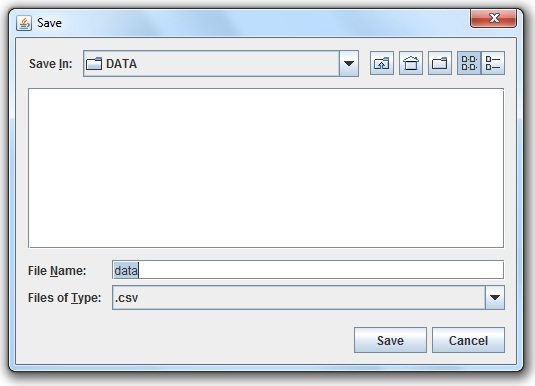

SIMS Manual
Exporting data
Step 1
To export the data from the list of loaded files, select "Export Summary Table" from the File menu.

Step 2
Enter a filename and hit the
Enter
key or press "Save".

Return to menu